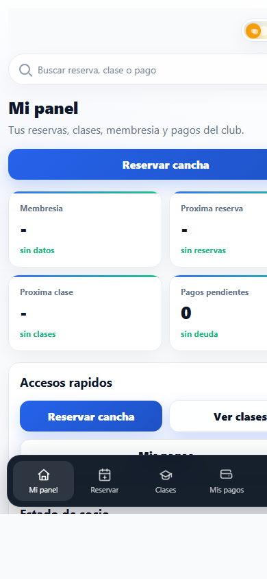
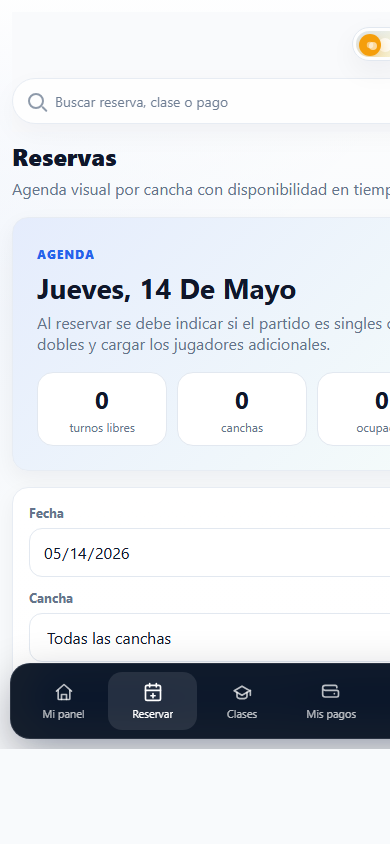
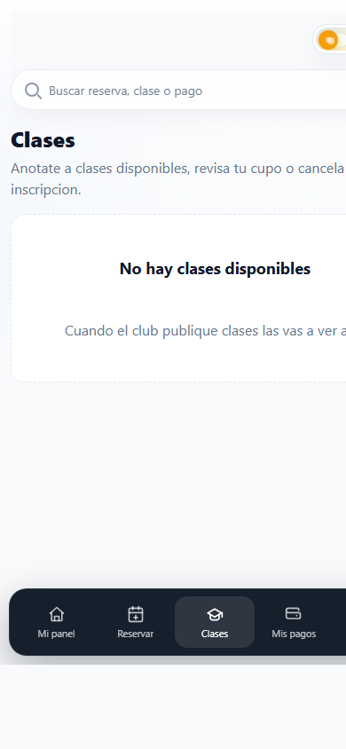
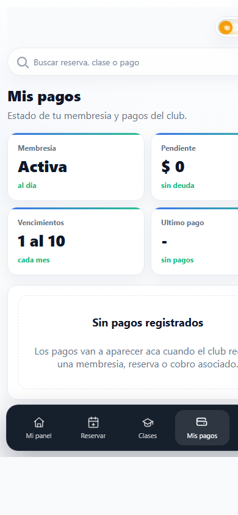
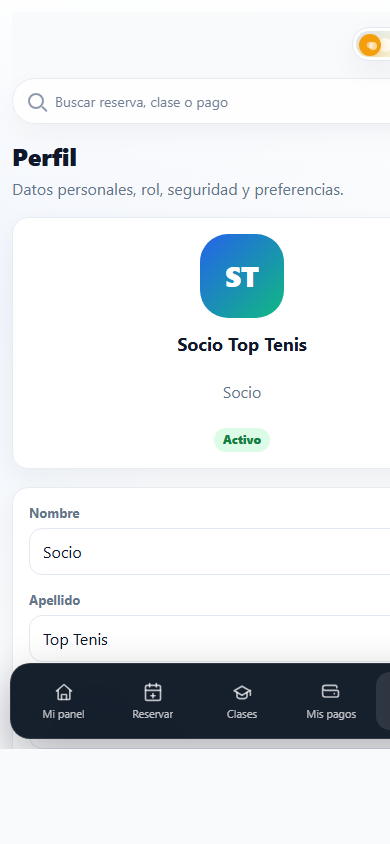

Como entrar desde el link del club, reservar cancha, ver clases, consultar pagos y revisar el perfil.

Antes de empezar
El club comparte una direccion propia. Desde ese link cada socio entra con su acceso personal.
Mi panel
Mi panel muestra membresia, proxima reserva, proxima clase y pagos pendientes si existen datos cargados.
Reservar
La pantalla de reservas muestra agenda, fecha, canchas y turnos disponibles u ocupados.

Clases
Desde Clases ves las actividades disponibles, cupos y estado de inscripcion.

Mis pagos
La pantalla de pagos muestra membresia, deuda pendiente, vencimientos y pagos registrados.

Perfil
Perfil permite consultar datos del usuario y preferencias de visualizacion.

Resumen
Usar la app como canal principal ayuda a que el club tenga reservas, clases y pagos ordenados.